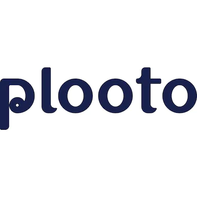
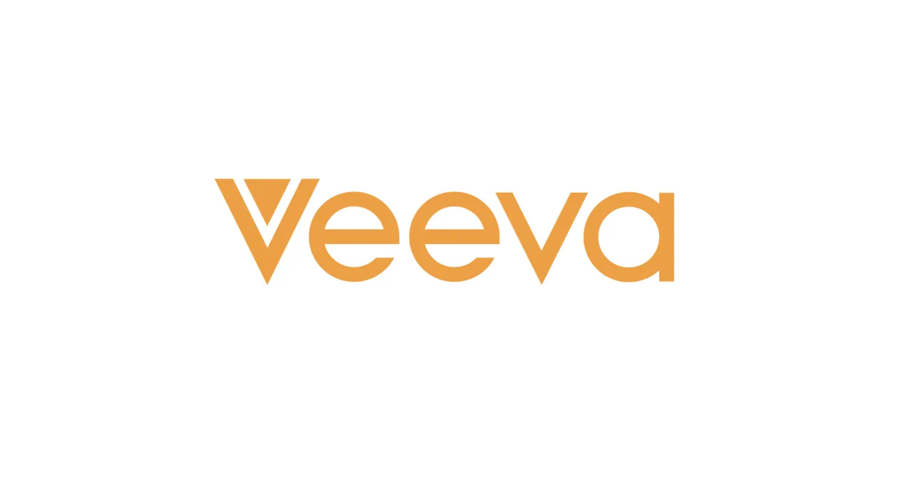

My co-op experiences so far!

Product Manager
- SAP HANA
- Databases and Data Management
A cloud-based data management platform. Scoped MVP features for the new Application Insights Portal, implemented an automated workflow using Python and SQL, evaluated customer feedback, and wrote product tutorials.

Product Manager
- Payments Platform
- FinTech
Payment automation software for small-to-medium businesses. Conducted competitive research, synthesized insights from product usage data, implemented a formal prioritization framework, and took part in lots of customer interviews.

QA Engineer
- Data Management
- Life Sciences
Veeva Network - cloud-based master data management platform for health care organizations. Performed integration testing, dabbled with work in the Product space, and made demonstrations of the feature I worked on.